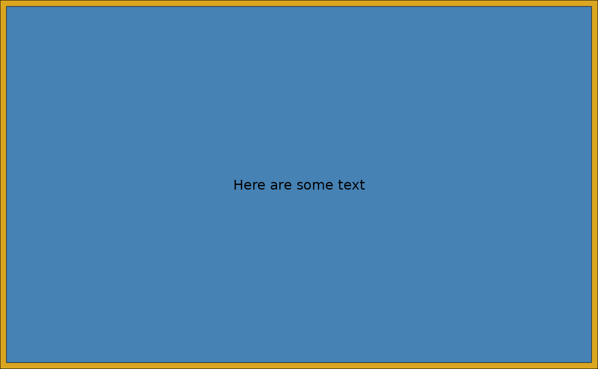

The wrap() function allows non-ggplot2 elements to be converted into a
compliant representation for use with align_plots(). This is useful for
adding any graphics that can be converted into a grob with the
patch() method.
Arguments
- plot
Any graphic that can be converted into a grob using
patch().- ...
Additional arguments passed to the
patch()method.- align
A string specifying the area to place the plot:
"full"for the full area,"plot"for the full plotting area (including the axis label), or"panel"for only the actual area where data is drawn.- on_top
A single boolean value indicates whether the graphic plot should be put frontmost. Note: the graphic plot will always put above the background.
- clip
A single boolean value indicating whether the grob should be clipped if they expand outside their designated area.
- vp
A viewport object, you can use this to define the plot area.
Value
A wrapped_plot object that can be directly placed into
align_plots().
Examples
library(grid)
wrap(rectGrob(gp = gpar(fill = "goldenrod")), align = "full") +
inset(rectGrob(gp = gpar(fill = "steelblue")), align = "panel") +
inset(textGrob("Here are some text", gp = gpar(color = "black")),
align = "panel"
)

p1 <- ggplot(mtcars) +
geom_point(aes(mpg, disp)) +
ggtitle("Plot 1")
align_plots(p1, wrap(
~ plot(mtcars$mpg, mtcars$disp),
mar = c(0, 2, 0, 0), bg = NA
))
#> Error in x[[1]][[2]]: subscript out of bounds